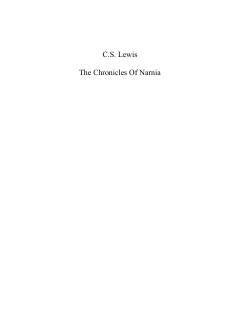

TLTo'rt bola sehrli shkaf orqali Narniya nomli afsonaviy o'lkaga sayohat qiladi.
Ikkinchi jahon urushi davrida to'rt nafar aka-uka va opa-singil eski uyda yashirin sehrli dunyoga olib boruvchi shkafni topib olishadi. Ular Narniya deb nomlangan muzlagan o'lkani yovuz jodugardan qutqarish uchun kurashadilar. Bu asar mashhur 'Narniya yilnomalari' turkumining birinchi qismidir.